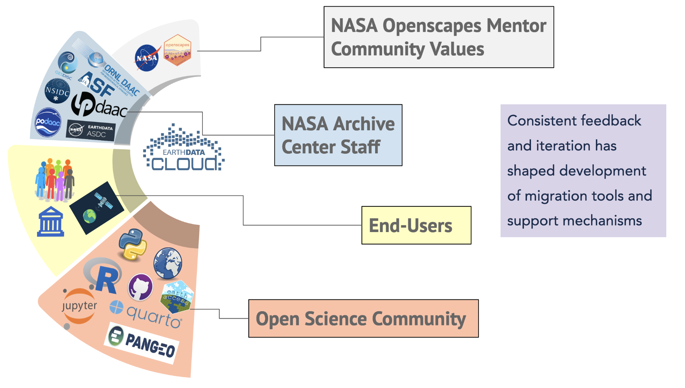
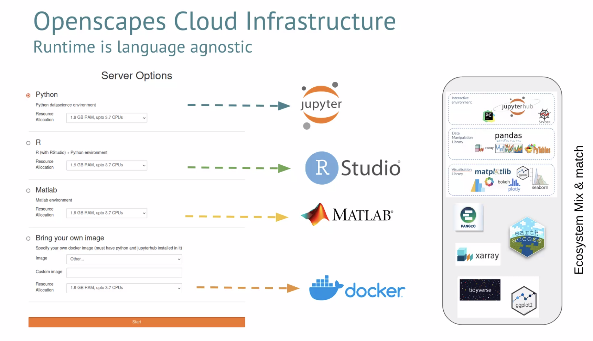
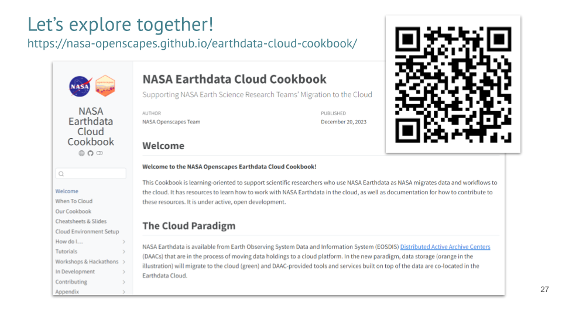
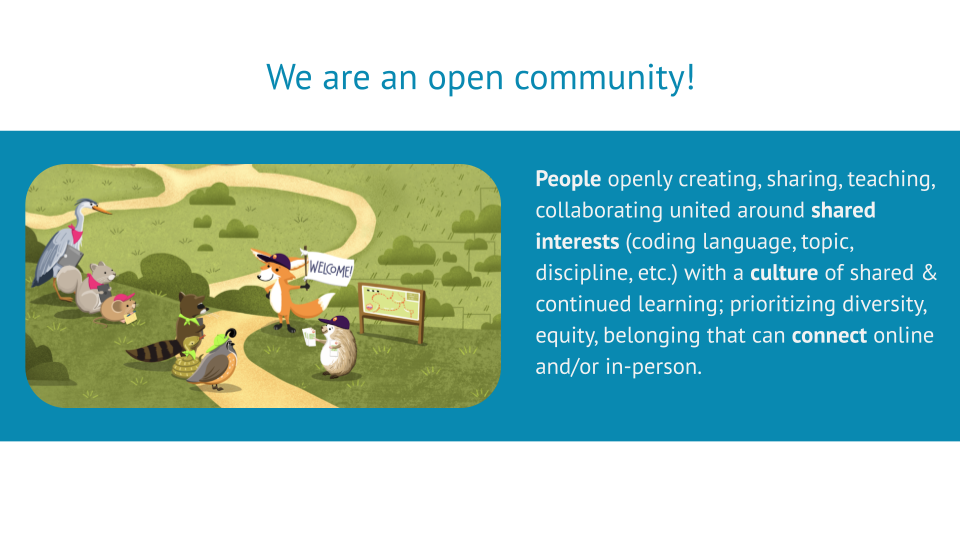

NASA Earthdata Webinar: NASA Openscapes Mentors from 4 data centers present the Earthdata Cloud Cookbook
Bri Lind ![]()
Alexis Hunzinger
Luis Lopez
Cassandra Nickles
NASA Openscapes Community
On Wednesday, February 28, NASA Openscapes Mentors from 4 data centers shared how to use the Openscapes Earthdata Cloud Cookbook—a compilation of open-source tutorials, workflows, libraries, and cheatsheets that help users find, access, and work with Earth science data. This was really exciting to have the opportunity for the Mentors to share about this work on a big stage! There were 106 attendees, and recordings of these webinars are often watched by many more! Presenters were Bri Lind from the Land Processes Data Active Archive Center(LP DAAC); Luis Alberto Lopez Espinosa, from the National Snow and Ice Data Center (NSIDC); Cassie Nickles from the Physical Oceanography Data Active Archive Center (PO.DAAC); and Alexis Hunzinger from the Goddard Earth Sciences Data and Information Services Center (GES DISC).
Quicklinks:
Community Developed Resources—Explore the Openscapes Earthdata Cloud Cookbook
Bri Lind kicked things off by describing data stewardship at NASA. NASA has many discipline specific data centers that archive and manage data from all of the Earth observation missions. She then shifted to NASA Openscapes - a mentor community across those NASA Earth science data centers that helps support users though co-creating common tutorials, hosting cloud training events, and practicing open science ourselves! Bri shared how open science is something we do in our daily work - we write open source code using tools like python, R, Quarto, and GitHub, and interact with open communities like leafmap, Pangeo, and rOpenSci.
“We really like to be active in other open source communities” - Bri Lind, Land Processes data center (LP DAAC)

Bri showed an illustration we refer to as the “shell” that shows how like a spiraling shell we co-developed across different teams of people that work with NASA Earthdata. The way this plays out for us: We as a small mentor community (in gray at the top) are able bring our deep expertise about NASA Earthdata from our data centers together to co-develop and learn across the data centers. Then we share back and incorporate with our colleagues at each of our data centers (blue). This means more people and time focussing real-life users (yellow). And we incorporate what we learn back into the open science community (orange). She emphasized that our resources are built with consistent feedback and iteration has shaped development of migration tools and support mechanisms (purple)
Bri also shared that in addition to everything we’ve accomplished together, we’ve all learned new skills and developed new friendships. This trust and ability to work together helps all of the data centers: we can help diverse users and also address the common needs across all users.
When to Cloud?
Alexis Hunzinger started the “When to Cloud” portion by reminding us that “Cloud” can mean multiple things at once - we also work with data from clouds in the sky!
What is the Cloud? An analogy is helpful: we can compare to how we shifted from renting physical movie DVDs from a store to how we now stream them online. When we think about scientific analysis in the Cloud, we can also think about streaming data. Like streaming a movie, we have to create an account with a provider, choose files from the provider’s archive, and then using your own device (computer), view and analyze with the provider’s resources (remote computers).
“What is the Cloud? Any internet-accessible system providing on-demand computing and distributed mass storage” - Alexis Hunzinger, Goddard Earth Sciences Data and Information Services Center (GES DISC)

Now that we have a shared understanding of what is the Cloud, we can ask ourselves these questions to consider when to Cloud:
- What is the data volume?
- How long will it take to download?
- Can you store all that data (cost and space)?
- Do you have the computing power for processing?
- Does your team need a common computing environment?
- Do you need to share data at each step or just an end product?
The Cookbook chapter When To ‘Cloud’ section shares more!
Openscapes Cloud Infrastructure
Luis Lopez said that once we have decided we will work in the Cloud, there are infrastructure considerations.
“We are working to bridge the technological gap as well as the knowledge gap to make it easer for everyone to get started in the Cloud” - Luis Lopez, National Snow and Ice Data Center (NSIDC)
Luis shared that working in the Cloud in a curated environment supports new learners by lowering technical barriers. In our NASA Openscapes JupyterHub managed by 2i2c, we’re able to support Python, RStudio, MATLAB users, and users can also bring their own base image. AND, the ecosystem of packages like matplotlib and ggplot2 are available from any of those images! This is important since many researchers use a combination of tools.

Earthdata Cloud Cookbook Walk-through
Cassie screenshared a live walk-through of the NASA Earthdata Cloud Cookbook. She pointed out the When to Cloud chapter, as well as a glossary and cheatsheets, Cloud environment setup (under active development), a ‘How do I …’ chapter to do things like find and subset data, or use APIs, a Tutorials chapter with notebooks, and a chapter of workshops and hackathon materials developed by the Mentors.
“We would love for anyone to be able to contribute to this. If you’re thinking, ‘I have a workflow that I would love share’, please send it our way”! - Cassie Nickles, Physical Oceanography Data Active Archive Center (PO.DAAC)
Cassie welcomed people to contribute - the Cookbook is built on Quarto and GitHub - and showed how to cite the Cookbook.

In closing, on behalf of the NASA Openscapes Mentors, Cassie shared her joy of working with this open community of people who are united around shared interests and needs.

Citation
@online{lind2024,
author = {Lind, Bri and Hunzinger, Alexis and Lopez, Luis and Nickles,
Cassandra and Openscapes Community, NASA},
title = {NASA {Earthdata} {Webinar:} {NASA} {Openscapes} {Mentors}
from 4 Data Centers Present the {Earthdata} {Cloud} {Cookbook}},
date = {2024-03-12},
url = {https://openscapes.org/blog/2024-03-12-nasa-earthdata-webinar/},
langid = {en}
}